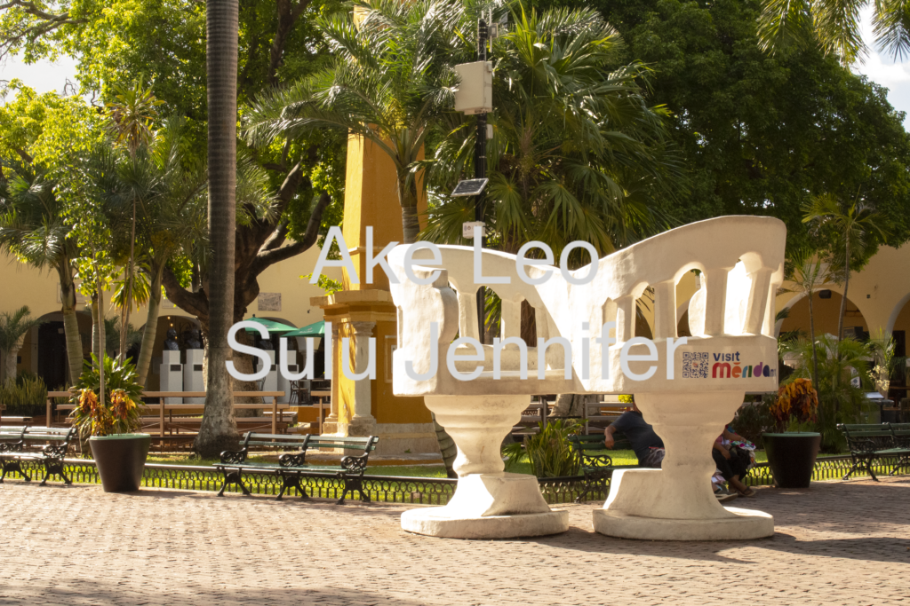

Parque de Santa Lucía
Ubicado al norte de la ciudad, es un ícono arquitectónico
El Parque Santa Lucía se encuentra a solo un par de cuadras
al norte del Parque de la Madre. Es un parque más grande y
popular en Mérida. Desde el siglo XX, ha sido un lugar para
honrar a los músicos y compositores de la trova yucateca.
Los jueves, se pueden disfrutar de serenatas tradicionales
yucatecas en el escenario.